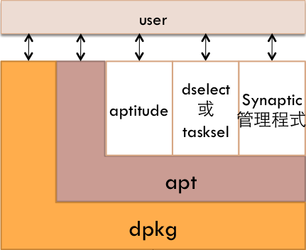
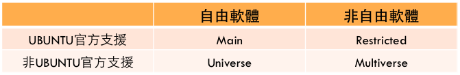

檢視檔案內容
cat- 顯示檔案內容
tac反向顯示檔案內容
more- 顯示檔案內容
- 可上下捲動
?顯示說明
新增 testuser1, testuser2
# adduser testuser1
# adduser testuser2
新增 testgroup ，並將 user, testuser1 加入 testgroup
# addgroup testgroup
# addgroup user testgroup
# addgroup testuser1 testgroup
建立檔案 testfile 於/tmp下
$ cd /tmp
$ touch testfile
並設定 testfile
r-x--x使 others 對 testfile 無權限
$ chmod 510 testfile
$ chgrp testgroup testfile
apt, aptitudebashShell 是一支程式
指令直譯器
提供方便的文字介面讓使用者與作業系統溝通
$ command [Options] argument1 argument2 ...
shcshtcshbashzsh, fish, ...一打開 Terminal 看到的就是 shell 的介面
user@ubuntu:~$
不同的 shell 可能會有不同的介面
查看目前 shell
$ echo $SHELL
查看系統可用的 shell
$ cat /etc/shells
更換 shell
$ chsh
whatis
help
info
h 顯示操作說明man
h 顯示操作說明man
CP(1)
NAME
cp - copy files and directories
CP(1) 中的 1 代表指令在 manual 的分類
1 使用者在 shell 環境中可以操作的指令或可執行檔2 系統核心可呼叫的函數與工具等3 一些常用的函數 (function) 與函式庫 (library) ，大部分為 C 的函式庫 (libc) 4 裝置檔案的說明，通常在 /dev 下的檔案5 設定檔或者是某些檔案的格式6 遊戲 (games)7 慣例與協定等，例如 Linux 檔案系統、網路協定、ASCII code 等等的說明8 系統管理員可用的管理指令9 跟 kernel 有關的文件cd
pwd
ls
相對路徑 與 絕對路徑/
C:\.
..
~
mkdir
rmdir
rm -rf 來刪除資料夾rm
-r 刪除資料夾和其下的檔案-f 強制刪除cp
把 file 複製一份成 file_copy
$ cp file file_copy
mv
移動檔案
$ mv file ../
重新命名
$ mv file new_file
在家目錄下新增下列的檔案、目錄
test/
├── dir/
│ └── file1
├── file3
└── hello/
└── file2
把 file 移到 test 目錄下
cat
tac 反向顯示檔案內容more
? 顯示說明less
more 有更多操作h 顯示說明wc
-l 顯示行數-w 顯示字數-c 顯示 byte 數head
顯示檔案的前幾行
$ head -n 5 filename
tail
sync
shutdown TIME [MESSAGE]
sync 後才會關機-h 關機-r 重新開機5 分鐘之後關機
# shutdown -h +5
halt
poweroff
reboot
shutdown 來做到adduser
deluser
sudosuuname
uname -a 顯示所有系統資訊date
date "+%Y/%m/%d"whow
top
h 顯示說明q 離開free
dmesg
head 和 tailssh 連到本機之後，看看 w 指令的結果有什麼變化rpm, yum
dpkg, apt
ports
...dpkg
apt
aptitude

$ sudo apt-get update
$ sudo apt-get install [套件名稱]
$ sudo apt-get remove [套件名稱]
$ sudo apt-get upgrade
$ apt-cache search [套件名稱]
$ sudo apt-get install aptitude
$ sudo aptitude install [套件名稱]
$ sudo aptitude remove [套件名稱]
$ sudo aptitude purge [套件名稱]
$ sudo aptitude upgrade
$ sudo aptitude safe-upgrade -> 用這個比較好！
$ sudo aptitude search [套件名稱]
apt-get 裝回來/etc/apt/sources.list
deb http://tw.archive.ubuntu.com/ubuntu/ oneiric main restricted
deb-src http://tw.archive.ubuntu.com/ubuntu/ oneiric main restricted

alias la="ls -al"alias rm="rm -i"aliasexport 來檢視目前的環境變數export VAR="DATA" 來自訂環境變數alias 的縮寫 不一樣/etc/profile
/etc/bash.bashrc
~/.profile
~/.bashrc
bash, csh, tcsh 均支援指令記錄historoy 可看指令歷史記錄![編號] 可重做指令stdin／stdout／stderr$ 指令 > 檔案$ 指令 >> 檔案 附加於檔案後$ 指令 < 檔案$ 指令1 | 指令2cat /etc/profile 的輸出有幾行wc -c < today 的結果是什麼意思echo台大資訊系統訓練班 Linux 作業系統班 /
#